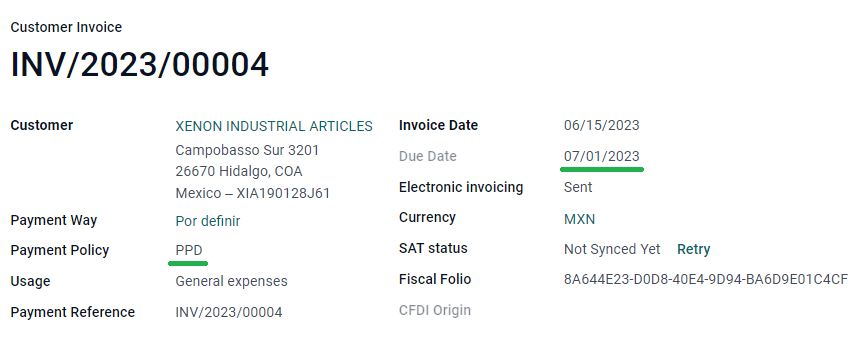
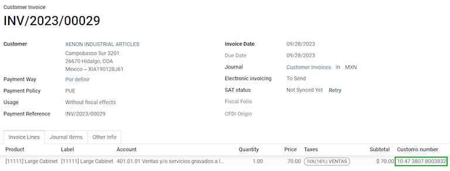

Mexico¶
Webinars¶
Below you can find videos with a general description of the localization, and how to configure it.
Introduction¶
Odoo users in Mexico have access to a set of modules that allow them to sign electronic invoices according to the specifications of the SAT for version 4.0 of the CFDI , a legal requirement as of January 1, 2022.
These modules also add relevant accounting reports (such as the DIOT, enable foreign trade, and the creation of delivery guides).
構成設定¶
Requirements¶
Before making the necessary configurations to have the Mexican localization installed in Odoo, it is necessary to meet the following requirements:
Be registered in the SAT, with a valid RFC.
Have a Certificate of Digital Seal (CSD).
Choose a PAC (Proveedor Autorizado de Certificación / Authorized Certification Provider). Currently, Odoo works with the following PACs: Solución Factible, Quadrum (formerly Finkok) and SW Sapien - Smarter Web.
Have knowledge and experience with billing, sales, and accounting in Odoo. This documentation contains only the necessary information to use Odoo.
Modules installation¶
Install the following modules to get the main features of the Mexican localization:
名前（name） |
Technical name |
Description |
|---|---|---|
Mexico - Accounting |
|
The default fiscal localization package, adds accounting characteristics for the Mexican localization, such as the most common taxes and the chart of accounts based on the SAT account grouping code. |
EDI for Mexico |
|
Includes all the technical and functional requirements to generate and validate Electronics Documents, based on the technical documentation published by the SAT. This allows you to send invoices (with or without addendas) and payment complements to the government. |
EDI v4.0 for Mexico |
|
Necessary to create XML documents with the correct specifications of the CFDI 4.0. |
注釈
When you install a database from scratch by selecting Mexico as the country, Odoo automatically installs the following modules: Mexico - Accounting, EDI for Mexico, and EDI v4.0 for Mexico.
The following modules are needed to add Mexico's Electronic Accounting. They require the Accounting module to be installed.
名前（name） |
Technical name |
Description |
|---|---|---|
Odoo Mexican Localization Reports |
|
Adapts reports for Mexico's Electronic Accounting: Chart of Accounts, Trial Balance, and DIOT. |
Mexico - Localization Reports for Closing |
|
Necessary to create the Closing Entry (Also known as the month 13th move). |
Odoo Mexican XML Polizas Export |
|
Lets you export XML files of your Journal Entries for a compulsory audit. |
Odoo Mexican XML Polizas Export Edi bridge |
|
Complements the module |
The following modules are optional. It's recommended to install them only if you meet a specific requirement. Make sure that they are needed for your business.
名前（name） |
Technical name |
Description |
|---|---|---|
EDI for Mexico (Advanced Features) |
|
Adds the external trade complement to invoices: A legal requirement for selling products to foreign countries. |
EDI v4.0 for Mexico (COMEX) |
|
Adapts the module |
Mexico - Electronic Delivery Guide |
|
Lets you create a "Carta Porte": a bill of lading that proves to the government you are sending goods between A & B with a signed electronic document. |
Electronic Delivery Guide for Mexico CFDI 4.0 |
|
Adapts the module |
Odoo Mexico Localization for Stock/Landing |
|
Allows managing customs numbers related to landed costs in electronic documents. |
Configure your company¶
After installing the correct modules, you must verify that the company is configured with the correct data. To do so, go to and select Update Info under your company name.
Enter your full Address in the resulting form including ZIP code, State, Country, and RFC (VAT number).
According to the requirements of the CFDI 4.0, the name of your main contact must coincide to your business name registered in the SAT without the legal entity abbreviation.

重要
From a legal point of view, a Mexican company must use the local currency (MXN). Therefore, Odoo does not provide features to manage an alternative configuration. If you want to manage another currency, let MXN be the default currency and use a pricelist instead.
Next, go to , and select the regime that applies to your company from the drop-down list.

ちなみに
If you want to test the Mexican localization, you can configure the company with a real address
within Mexico (including all fields), add EKU9003173C9 as the VAT and ESCUELA
KEMPER URGATE as the Company Name. For the Fiscal Regime, use
General de Ley Personas Morales.
Contacts¶
To create a contact that can be invoiced, go to . Then enter the contact's name, full Address including ZIP code, State, Country, and RFC (VAT number).
重要
As with your own company, all of your contacts needs to have their correct business name registered in the SAT. This also applies to the Fiscal Regime which needs to be added in the MX EDI tab.
Taxes¶
Some additional configurations for factor type and tax objects need to be added to the sales taxes in order to properly sign invoices.
Factor type¶
Go to then enable the Factor Type field in the Advanced Options tab for all records with the Tax Type set as Sales.
This is pre-loaded in the default taxes. If new ones are created, you need to make sure to fill this field.

ちなみに
Mexico manages two different kinds of 0% VAT: 0% VAT and VAT Exempt. For the former, select the Factor Type Tasa. For the latter, use Exento.
Tax object¶
One requirement of the CFDI 4.0 is that the resulting XML file needs or does not need to break down the taxes of the operation. There are three different possible values that are added depending on specific configurations:
01: Not subject to tax - your invoice must not contain any taxes.02: Subject to tax - your invoice contains taxes (default configuration).03: Subject to tax and not forced to breakdown - your invoice contains taxes, and the contact configuration has the No Tax Breakdown checkbox activated.

重要
The No Tax Breakdown value applies only to specific fiscal regimes and/or taxes. Consult your accountant first if it is needed for your business before doing any modification.
Other tax configurations¶
When registering a payment, Odoo will carry out the movement of taxes from the Cash Basis
Transition Account to the account set in the Definition tab. For such movement, a tax
base account will be used: (Base Imponible de Impuestos en Base a Flujo de Efectivo) in the
journal entry when reclassifying taxes. Do not delete this account.
If you create a new tax, you need to add the correct Tax Grids for it (IVA, ISR or
IEPS). Odoo only supports these three groups of taxes.

Products¶
To configure products, go to the Accounting tab, and in the UNSPSC Product Category field, select the category that represents that product. The process can be done manually or through a bulk import.
注釈
All products need to have a SAT code associated with them in order to prevent validation errors.
Electronic invoicing¶
PAC credentials¶
After you have processed your Private Key (CSD) with the SAT, you must register directly with the PAC of your choice before you start creating invoices from Odoo.
Once you created your account with any of these providers, go to . Under the MX PAC section, enter the name of your PAC with your credentials (PAC username and PAC password).

ちなみに
If you do not have credentials and want to test the electronic invoicing, you can activate the Test Environment checkbox and select Solucion Factible as the PAC. You do not need to add a username or password.
.cer and .key certificates¶
You need to upload the digital certificates of the company within the section
MX Certificates. Select Add a line and a window will open. Click on
Create, and from there upload your digital certificate (.cer file), your key
(.key file), and your password. To finish, click on Save and Close.

ちなみに
If you still do not have one of the contracted PACs and you want to test electronic invoicing you can use the following SAT test certificates:
Password:
12345678a
Workflows¶
Electronic invoicing¶
The invoicing process in Odoo is based on Annex 20 version 4.0 of electronic invoicing of the SAT.
Customer invoices¶
To start invoicing from Odoo, a customer invoice must be created using the standard invoicing flow.
When the document is in draft mode, you can make any changes to it (add the correct Payment Way or Usage that the customer might require, for example.)
After you Confirm the customer invoice, a blue message appears stating: The invoice will be processed asynchronously by the following E-invoicing service: CFDI (4.0). Pressing the Process Now button sends the document to be signed by the government. On success, the Fiscal Folio field appears on the document and the XML file is attached in the chatter.
ちなみに
If you press Retry in the field SAT status of the invoice, you can confirm if the XML file is valid in the SAT.
If you are in a testing environment, you will always receive the message Not Found.
To send the signed invoice to your client by mail, you can send the XML together with the PDF file directly from Odoo by clicking the Send and Print button. You can also download the PDF file to your computer by clicking the Print button and selecting the desired option.
Credit notes¶
While an invoice is a document type "I" (Ingreso), a credit note is a document type "E" (Egreso).
The only addition to the standard flow for credit notes is that, as a requirement of the SAT, there has to be a relation between a credit note and an invoice through the fiscal folio.
Because of this, the field CFDI Origin adds this relation with a 01|, followed by the
fiscal folio of the original invoice.

ちなみに
For the CFDI Origin field to be added automatically, use the button Add Credit Note from the invoice instead of creating it manually.
Payment complements¶
Payment policy¶
One of the additions of the Mexican Localization is the field Payment Policy. According to the SAT documentation, there may be 2 types of payments:
PUE(Pago en una Sola Exhibición/Payment in a Single Exhibition)PPD(Pago en Parcialidades o Diferido/Payment in Installements or Deferred)
The difference lies in the Due Date or Payment Terms of the invoice.
To configure PUE invoices, you must select an invoice Due Date within the same month or choose a payment term that does not imply changing the due month (immediate payment, 15 days, 21 days, all falling within the current month).

ちなみに
Some Payment Terms are already installed by default. You can check them in .
To configure PPD invoices, you need to choose a Due Date after the first day of the following month (this also applies if your Payment Term is due in the following month).
重要
Because the PPD policy implies that an invoice is not going to get paid at the moment, the correct Payment Way for the PPD invoices is 99 - Por Definir (To define).
Payment flow¶
In both cases, the payment process in Odoo is the same, the main difference would be that payments related to PPD invoices trigger the creation of a document type "P" (Pago).
If a payment is related to a PUE invoice, it can be registered with the wizard and be associated with the corresponding invoice. Its status will be In Payment since the payment is effectively validated when it is bank reconciled.
While this process is the same for PPD invoices, the addition of the creation of an electronic document means that some additional requirements are needed to correctly send the document to the SAT.
You need to confirm the specific Payment Way where you received the payment. Because of this, this field cannot be 99 - Por Definir (To Define).
If you are going to add a bank account to the customer in the Accounting tab of their contact, it needs to have a valid number.
注釈
The exact configurations are in the Anexo 20 of the SAT. Usually, the Bank Account needs to be 10 or 18 digits for transfers, 16 for credit or debit cards.
If a payment is related to a signed invoice with the Payment Policy PPD, Odoo
generates the corresponding payment complement automatically once you press Process Now.

警告
A payment in MXN cannot be used to pay multiple invoices in USD. Rather, the payment should be separated into multiple payments created using the Register Payment button on the corresponding invoices.
Invoice cancellations¶
It is possible to cancel the EDI documents sent to the SAT. According to the Reforma Fiscal 2022, since January 1st 2022, there are two requirements for this:
With all cancellation requests, you have to specify a cancellation reason.
After 24 hours have passed, the client must be asked to accept the cancellation.
There are four different cancellation reasons. In Odoo, you can cancel invoices with the reasons 01 Invoices sent with errors with a relation, and 02 Invoices sent with errors without a relation.
01 - invoices sent with errors with a relation¶
This cancellation motive has to be used when a new invoice needs to substitute the original one, due to an error in any field.
Copy the Fiscal Folio of the old invoice
Paste it into the field CFDI Origin of the new invoice, followed by a
04|Sign the new document.

Go back to the old invoice, the field Substituted By should appear.
Click the Request EDI Cancellation button.
As if it were a regular invoice, a blue field then appears on the invoice. Click Process Now.
The invoice status is moved to Cancelled and you receive a confirmation in the chatter.

Now, the invoice should be canceled in the SAT too. You can confirm that this was done correctly by pressing Retry in the SAT status field.
If the document was canceled after 24 hours, it is possible that the client must be asked to accept the cancellation in their "Buzón Tributario".
注釈
The 04| is only a code that helps Odoo to perform this process. It has no relation to the
method 04 reason for cancellation.
02 - invoices sent with errors without a relation¶
This cancellation motive has to be used when an invoice was sent with an error in any field and does not need to be replaced by another one.
For this case, all that is required is to click on Request EDI Cancellation, and then press click the Process Now button.
As the field Substituted By does not exist, the SAT should detect automatically that the cancellation reason is 02.
重要
Odoo has certain limitations to canceling invoices in the SAT: The reasons 03 and 04 (Operation did not take place and Nominative transactions related to a global invoice) are not currently supported by Odoo. For this, you need to cancel the invoice directly in the SAT and use a Server Action.
Payment cancellations¶
It is also possible to cancel Payment Complements. For this, go to the payment and select Request EDI Cancellation. As with invoices, a blue button will appear. Select Process now, and the document will be sent to the SAT. After a few seconds, you can press Retry to confirm the current SAT status.
The payment moves their status to Cancelled.
注釈
Just like invoices, when you create a new Payment Complement, you can add the relation of the
original document by adding a 04| plus the fiscal folio.
Invoicing special use cases¶
CFDI to public¶
If the customer you are selling goods or services to does not require an invoice, a CFDI to Public has to be created.
However, if you use the name PUBLICO EN GENERAL, an error will be triggered. This is a main change
in the CFDI 4.0 that states that invoices with that specific name needs additional fields.
Odoo currently does not support this. So for a CFDI to Public to be created, you need to add any
name to your customer that is not PUBLICO EN GENERAL. (For example CLIENTE FINAL)
In addition to this, the zip code of your company, and the generic RFC XAXX010101000
are needed. The Fiscal Regime of your customer must be Sin obligaciones fiscales.

Multicurrency¶
The main currency in Mexico is MXN. While this is mandatory for all Mexican companies, it is possible to send and receive invoices and payments in different currencies. To do this, you can enable the use of multicurrency. And select Mexican Bank as the service in .
This way, in the XML file of the document you get the correct exchange rate and the total amount both in the foreign currency and in MXN.
It is highly recommended to use a bank account for each currency.

注釈
The only currencies that automatically update their exchange rate daily are USD, EUR, GBP, and JPY.
Down payments¶
There can be cases where you receive a payment in advance from a customer, that needs to be applied to an invoice later. In order to do this in Odoo, it is required to properly link invoices to each other with the CFDI Origin field.
It is necessary to have the Sales app installed.
First, navigate to the app to create a product Anticipo and configure it:
the Product Type must be Service, and use the UNSPSC Category
84111506 Servicios de facturación.
Then, go to and add the product as the default.
Create a sales order with the total amount, and create a down payment (either using a percentage or fixed amount). Then, sign the document, and Register the Payment.
When the time comes for the customer to get the final invoice, create it again from the same sales order. In the Create Invoices wizard select Regular Invoice and uncheck Deduct down payments.
Then, copy the Fiscal Folio from the first invoice and paste it into the CDFI
Origin of the second invoice, adding the prefix 07|. Sign the document.
After this, create a credit note for the first invoice. Copy the Fiscal Folio from the
second invoice and paste it in the CFDI Origin of the credit note, adding the prefix
07|. Sign the document.
With this, all electronic documents are linked to each other. The final step is to fully pay the new invoice. At the bottom of the new invoice, you can find Outstanding credits in the credit note, add it as payment. Finally, register the remaining amount with the Register Payment wizard.
External trade¶
The external trade is a complement to a regular invoice that adds certain values in both the XML and PDF, according to SAT regulations.
This adds certain mandatory fields to invoices with a foreign customer, such as:
The specific address of the receiver and the sender
The addition of a Tariff Fraction that identifies the type of product
The correct Incoterm (International Commercial Terms), among others.
This allows the correct identification of exporters and importers, in addition to expanding the description of the merchandise sold.
Since January 1st, 2018, it is a requirement for taxpayers who carry export operations of A1 type. While the current CFDI is 4.0, the external trade is currently on version 1.1
In order to use this feature, the modules l10n_mx_edi_extended and l10n_mx_edi_extended_40 have to be installed.
重要
Before installing, make sure first that your business needs to use this feature. Consult your accountant first if needed before doing any modification.
構成設定¶
Contacts¶
While the CFDI 4.0 requirements ask you to add a valid zip code in your contact, the external trade complement adds as a mandatory field the City and the State. All three fields must coincide with the Official SAT Catalog or you will receive an error.
警告
Add the City and State in the company's contract, not in the company itself. You can find your company's contact in
The fields Locality and Colony Code are optional and can be added in the company directly in . These two have to coincide with the data in the SAT.

The contact data for the foreign receiving client must have the following fields completed to avoid errors:
The entire company Address, including a valid ZIP code and the foreign Country.
The format of the foreign VAT (tax identification number, for example: Colombia
123456789-1)In the MX EDI tab, you need to address if the customer receives goods for a period of time temporarily (Temporary) or permanently (Definitive).
If you create this contact based in another from Mexico, make sure that you delete any information in the field Fiscal Regime. Do not use No Tax Breakdown either.
注釈
In the resulting XML and PDF, the VAT is automatically replaced by the generic VAT
for abroad transactions: XEXX010101000.
Products¶
All products involved with external trade must fill four fields, two of them exclusive to this feature.
The Internal Reference of the product is in the General Information tab.
The Weight of the product must be more than
0.The correct Tariff Fraction of the product in the Accounting tab.
The UMT Aduana corresponds to the Tariff Fraction.

ちなみに
If the UoM code of the Tariff Fraction is
01, the correct UMT Aduana iskg.If the UoM code of the Tariff Fraction is
06, the correct UMT Aduana isUnits.
Invoicing flow¶
Before creating an invoice, it is important to take into account that external trade invoices require to convert the amounts of your product into USD. Therefore, we need to have multicurrency enabled and activate USD in the Currencies section. The correct Service to run is Mexican Bank.
With the correct exchange rate set up in , the only fields left are Incoterm and Certificate Source in the Other Info tab. The latter is optional.

Sign the invoice with the same process as a regular one: Press the Process Now button.
Delivery guide¶
A Carta Porte is a bill of lading: a document that states the type, quantity, and destination of goods being carried.
On December 1st, 2021, version 2.0 of this CFDI was implemented for all transportation providers, intermediaries, and owners of goods. Odoo is able to generate a document type "T" (Traslado) which, unlike other documents, is created in a delivery order instead of an invoice or payment.
Odoo can create XML and PDF files with or without ground transport and can process materials that are treated as Dangerous Hazards.
In order to use this feature, the modules l10n_mx_edi_extended, l10n_mx_edi_extended_40, l10n_mx_edi_stock and l10n_mx_edi_stock_40 have to be installed.
In addition to this, it is necessary to have the Inventory and Sales apps configured.
重要
Odoo does not support Carta Porte type "I" (Ingreso), air, or marine transport. Consult your accountant first if this feature is needed before doing any modifications.
構成設定¶
Odoo manages two different types of CFDI:
No Federal Highways: It is used when the Distance to Destination is less than 30 KM.
Federal Transport: It is used when the Distance to Destination exceeds 30 KM.
Other than the standard requirements of regular invoicing (The RFC of the customer, the UNSPSC code...), if you are using No Federal Highways, no external configuration is needed.
For Federal Transport, several configurations have to be added to contacts, vehicle setups, and products. Those configurations are added to the XML and PDF files.
Contacts and vehicles¶
Like with the external trade feature, the address in both your company and your final customer has to be complete. The zip code, city, and state must coincide with the Official SAT Catalog
ちなみに
The field Locality is optional for both addresses.
重要
The origin address used for the delivery guide is set in . While this is set as the company address by default, you can change it according to your correct warehouse address.
Another addition to this feature is the Vehicle Setups menu found in . This menu lets you add all the information related to the vehicle used for the delivery order.
All fields are mandatory to create a correct delivery guide.

In the Intermediaries section, you need to add the operator of the vehicle. The only mandatory fields for this contact are the VAT and Operator Licence.
Products¶
Like with regular invoicing, all products must have a UNSPSC category. In addition to this, there are two extra configurations for products involved in delivery guides:
The Product Type must be set as Storable Product for stock movements to be created.
In the Inventory tab, the field Weight should have more than 0.

Sales and inventory flow¶
To create a delivery guide, first, you need to create and confirm a sales order. This generates a Delivery smart button. Press it and Validate the transfer.
After the status is set to Done, you can edit the transfer and select the Transport Type (either No Federal Highways or Federal Transport).
If your delivery guide has the type No Federal Highways, you can save the transfer and then press Generate Delivery Guide. The resulting XML can be found in the chatter.
注釈
Other than the UNSPSC in all products, delivery guides that use No Federal Highways do not require any special configuration to be sent to the government.
If your delivery guide has the type Federal Transport, the tab MX EDI
appears. In there, write a value in Distance to Destination (KM) bigger than 0, and
select the Vehicle Setup used for this delivery.

Dangerous hazards¶
Certain values in the UNSPSC Category are considered in the official SAT catalog as dangerous hazards. These categories need additional considerations when creating a delivery guide with Federal Transport.
In the product, the fields Hazardous Material Designation Code (MX) and Hazardous Packaging (MX) must be filled with the correct code from the SAT catalog.
In the vehicle setup, the data from the Environment Insurer and Environment Insurance Policy has to be filed too.

After this, continue with the regular process to create a delivery guide.
Customs numbers¶
A customs declaration (Pedimento Aduanero) is a fiscal document that certifies that all contributions to the fiscal entity (the SAT) has been paid, for the import/export of goods.
According to the Annex 20 of CFDI 4.0, in documents where the invoiced goods come from a first-hand import operation, the field Customs Number needs to be added to all lines of products involved with the operation.
For this, the module l10n_mx_edi_landing has to be installed, in addition to the Inventory, Purchase and Sales apps configured.
重要
Do not confuse this feature with external trade. The customs numbers are directly related to importing goods, while the external trade complement is related to exporting. Consult your accountant first if this feature is needed before doing any modifications.
構成設定¶
In order to track the correct customs number for a specific invoice, Odoo uses landed costs. Go to . Make sure that Landed Costs is activated.
First, a service-type product called Pedimento has to be created. In the Purchase
tab, check Is a Landed Cost and select a Default Split Method.
After this, we need to configure the storable products that holds the customs numbers. We need to make sure that the product category has the following configuration:
Costing Method: Either FIFO or AVCO
Inventory Valuation: Automated
Stock Valuation Account: 115.01.01 Inventario
Stock Journal: Inventory Valuation
Stock Input Account: 115.05.01 Mercancías en tránsito
Stock Output Account: 115.05.01 Mercancías en tránsito

Purchase and sales flow¶
Create a Purchase Order, and confirm the order. This should trigger a Receipt smart button. Validate the receipt too.

Go to and create a new record. Add the
transfer that you just created, and both the product Pedimento and Customs number.
Optionally, you can add a cost amount. After this, validate the landed cost. Once Posted, all products related to that receipt have the customs number assigned.
警告
You can only add the Pedimentos number once, so be careful when associating the correct number with the transfer(s).

Now, create a sales order and confirm it. This should trigger a Delivery smart button. Validate it.
Finally, create an invoice from the sales order and confirm it. The invoice line related to your product has a customs number in it.
Electronic accounting¶
For Mexico, Electronic Accounting refers to the obligation to keep accounting records and entries through electronic means and to enter accounting information on a monthly basis through the SAT's website.
It consists of three main XML files:
The updated list of the chart of accounts that you are currently using.
A monthly trial balance, plus a closing entry report also known as Trial Balance Month 13.
Either optional or for a compulsory audit, an export of the journal entries in your general ledger.
The resulting XML files follow the requirements of the Anexo Técnico de Contabilidad Electrónica 1.3.
In addition to this, you can generate the DIOT: A report of vendor's journal entries that involves IVA taxes that can be
exported in .txt file.
In order to use these reports, the modules l10n_mx_reports, l10n_mx_reports_closing, l10n_mx_xml_polizas and l10n_mx_xml_polizas_edi have to be installed, as well as the Accounting.
You can find all of those reports in .
重要
The specific characteristics and obligations of the reports that you send might change according to your fiscal regime. Always contact your accountant before sending any documents to the government.
Catálogo de cuentas (chart of accounts)¶
The chart of accounts in México follows a specific pattern based in SAT's Código agrupador de cuentas.
You can create any account as long as it respects SAT's encoding group, This pattern is
NNN.YY.ZZ or NNN.YY.ZZZ.
Example
Some examples are 102.01.99 or 401.01.001.
When you create a new account in , if you follow this pattern, you get the correct grouping code in Tags, and your account appears in the COA report.
Once you created all your accounts, and made sure that you put the correct Tags in them.
注釈
You cannot use any pattern that ends a section with a 0 (such as 100.01.01, 301.00.003 or
604.77.00). This triggers errors in the report.
Once all is set up, you can go to and press the button SAT (XML).
Balanza de comprobación (trial balance)¶
The trial balance reports the initial balance, credit, and total balance of your accounts, provided that you added their correct encoding group.
This report can be generated monthly, and an XML file version is created if you go to and press the button SAT (XML). Select the month you want to download beforehand.

注釈
Odoo does not generate the Balanza de Comprobación Complementaria.
An additional report is the Month 13: a closing balance sheet that shows any adjustments or movements made in the accounting to close the year.
In order to be able to generate this XML document, you have to go to and create a new document. Here, you can add all amounts that you want to modify, and you can balance the debit and/or credit of each one.
After this is done, press Mark as Closing Entry, and the report found in contains the total amount of the year, plus all the additions of the journal entry.
You can generate the XML file by pressing the button SAT (XML).

Pólizas (general ledger)¶
By law, all transactions in Mexico must be recorded digitally. Because Odoo automatically creates all the underlying journal entries of your invoicing and payments, you can export your journal entries to comply with SAT's audits or tax refunds.
This XML file is created in .
ちなみに
You can filter by period or by journal, according to your current needs.
After you press XML (Polizas), a wizard appears. In here, you can select between four types of Export type.
For Tax audit or Audit certification, you need to write the Order Number provided by the SAT for Return of goods or Compensation, you need to write your Process Number, also provided by the SAT.

注釈
If you want to see this report without sending it, use ABC6987654/99 for Order
Number and AB123451234512 for Process Number.
DIOT report¶
The DIOT (Declaración Informativa de Operaciones con Terceros / Informative Declaration of Operations with Third Parties) is an additional obligation with the SAT, where we give the current status of our creditable and non-creditable payments, withholdings and refunds of VAT from your vendor bills.
Unlike other reports, this is uploaded to a software provided by the SAT that contains the A-29
form. In Odoo, you can download the records of your transactions in a .txt file that you can
upload to the form, avoiding direct capture of this data.
This file contains the total amount of your payments registered in vendor bills, broken down into the corresponding types of IVA. The VAT and Country is mandatory for all vendors.
To get the report, go to . Select the month that suits you, and press DIOT (TXT) to download
the .txt file.

重要
You need to fill the field L10N Mx Type of Operation in the Accounting tab of each one of your vendors to prevent validation errors. Make sure that your foreign customers have their country set up for L10N Mx Nationality to appear automatically.